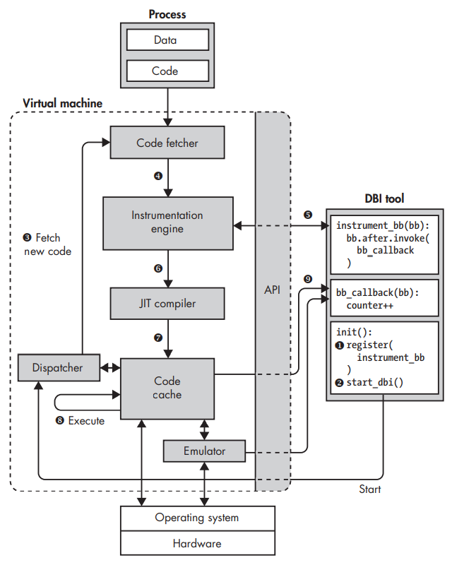

DynamoRIO Tutorial
DynamoRIO Tutorial
这个文档是一个DynamoRIO的使用教程。DynamoRIO是一个动态二进制插桩平台(Dynamic Binary Instrumentation Platform)，可以向用户提供一些API以实现一些用户自定义的插桩工具。虽然在DynamoRIO的官网上Available Tools目录下有一些现成的插桩工具，但是在有些场景下需要使用自定义的插桩，而这个文档将会介绍如何使用DynamoRIO来搭建自定义的插桩工具。
DBI(Dynamic Binary Instrumentation)
这里先介绍一下什么是动态二进制插桩，先从插桩开始介绍。
所谓插桩(Instrumenting)其实就是修改二进制文件的内容，在现有的二进制程序中的某些位置插入新的代码，然后以某种方式来观察或者修改二进制程序的行为。插入新的代码的位置被称为插桩点(instrumentation point)，添加的新代码就被称为插桩代码(instrumentation code)。
比如，假设你想知道一个二进制程序中调用最频繁的函数，以便对其进行着重优化。那么为了找到这个调用最频繁的函数，可以对所有的call指令进行插桩，也就是在所有的call指令之前插入新的指令，这些指令用以记录调用的目标。
二进制插桩分为两种类型，静态二进制插桩(Static Binary Instrumentation, SBI)与动态二进制插桩(Dynamic Binary Instrumentation, DBI)。有一些资料会将源码插桩，比如在源码中添加一条printf()语句来显示当前变量的取值，也归为一种类型。
这里简单介绍一下静态插桩方法，静态插桩就是对二进制文件进行插桩，在二进制文件中直接添加插桩指令以达到插桩的目的。
但是静态插桩面临着许多问题，首先，如果直接在二进制文件的任意一个位置中插入新的指令，那么就会改变二进制文件原有代码的偏移量，函数调用就会指向错误的地址，被插桩的程序也就无法正常执行。
上面介绍的问题是静态插桩需要解决的一个基本问题，也就是说必须要能够解决上面的问题才能使一个静态插桩工具正常运行。除了这个问题，静态插桩还无法解决间接跳转，考虑下面这样的指令：jmp *%rax，程序跳转到寄存器%rax中保存的地址中执行。在静态插桩的时候，无法知道寄存器%rax中存放的到底是什么地址，那么也就无法继续跟踪程序的控制流。
而且上面所讨论的静态插桩的问题都是基于正确反汇编的前提下的，如果这个前提不成立，那么进行任何插桩都会破坏原有的二进制文件。
所以静态插桩的方法的可靠性存在着很大的问题，目前也没有一种公开的且高效的SBI技术。
相对而言，动态插桩就能够很好地解决前面所讨论的问题：监视程序执行的指令流，在程序执行时进行插桩，能够有效地跟踪程序的执行过程。
下图是动态二进制插桩工具的整体框架，目前已知的两种DBI工具DynamoRIO和Pin都是基于这样的框架的，只是两者在实现细节和优化方法上存在不同。

这里的DBI tool就是用户自定义的插桩工具，在DynamoRIO中被称为client，在Pin中被称为Pintool。
用户可以在DBI tool中定义插桩点，插桩指令以及在什么时候进行插桩。插桩指令中包含用于监视或者修改目标进程的回调函数(callback function)，比如上图在一个基本块的末尾插入一条对bb_callback()函数的回调，然后bb_callback()就对这个基本块进行分析或者修改。
基本块(basic block)：是一组直线代码序列，除了基本块入口与出口没有其他的分支跳转。
首先，用户需要向DBI引擎注册这个DBI tool，这样DBI引擎才能够找到用户在DBI tool中定义的插桩规则，注册完成后DBI 引擎将会启动目标进程；随后code fetcher会从目标进程中提取一段代码；instrumentation engine会按照DBI tool中定义的规则对这段代码进行插桩；已插桩的代码将由JIT(Just-In-Time) compiler 进行优化，并重写代码的控制流，保证控制流不会跳转到未插桩的代码执行而丢失对目标进程的跟踪；这里的JIT编译器与其他场景下(Java, C#)的JIT编译器不同，这里的JIT编译器的作用主要是优化机器码，相当于是将机器码转换成机器码。
经过插桩和JIT编译后的代码将会被存放在code cache中执行，以便已插桩的代码能够被重用而无需每次都让instrumentation engine进行插桩操作。当遇到的控制流指令要求获取新的代码时，将会重新进行code fetch的工作。
code cache中的大部分指令都是直接运行，但对于某些指令，DBI引擎可能会对其进行模拟而不是直接执行。
Overview
这部分的内容主要是对DynamoRIO的大致框架进行介绍，主要的参考内容是官方文档中Build Your Own Tool -> Tool Event Model and API，内容包括DynamoRIO的事件类型以及常用API。
Common events
DynamoRIO中提供了一些client可以拦截的特定事件，如果在client中定义了事件拦截函数，那么当这个事件触发时，DynamoRIO将会调用client中定义的事件拦截函数，这就是client与DynamoRIO交互的基本模式。
常见的事件有下面几种：
- 基本块以及trace的生成和删除，当DynamoRIO中获取或者删除一个基本块或者trace时触发，dr_register_bb_event(), dr_register_bb_event(), dr_register_trace_event(), dr_register_delete_event()
- 进程的初始化和退出，当目标进程开始执行和退出时触发，dr_client_main(), dr_register_exit_event()
- 线程的初始化和退出，当目标进程中有创建线程或者线程退出时触发，dr_register_thread_init_event(), dr_register_thread_exit_event()
- 系统调用拦截，当目标进程执行一个系统调用之前或之后，或者由数字过滤的系统调用时触发，dr_register_pre_syscall_event(), dr_register_post_syscall_event(), dr_register_filter_syscall_event()
这里只介绍了几种经常会用到的事件，上面所出现的函数就是DynamoRIO提供的API，通过这些API，用户可以在client中定义当触发这些事件时应该回调哪个函数，这些API都是以一个函数指针作为参数。
通常，client需要在DynamoRIO提供的API，dr_client_main() ，中对所需要的事件进行注册，也就是指定相应拦截事件的回调函数，这样当这些事件发生时DynamoRIO就会调用回调函数进行处理。所以 dr_client_main() 也相当于是每个client的程序入口点。每个可拦截事件都有对应的API指定拦截该事件的回调函数，比如 dr_register_thread_init_event() 接口用于指定拦截线程初始化事件的回调函数，当目标进程初始化一个线程时，DynamoRIO将会调用指定的回调函数。
DynamoRIO中也提供了一些用于解注册的API，用于取消某个事件与对应的回调函数的绑定关系。
需要注意的是，DynamoRIO允许同一个事件与多个回调函数关联，但是DynamoRIO不会统合这多个回调函数的接口，而需要client自行处理好多个回调函数的适应性。
在头文件 dr_events.h 中定义了所有的注册接口和解注册接口。
DynamoRIO也向用户提供了强大的实用程序库，用户可以借由这个程序库实现运行时的代码转换。这些接口在 dr_tools.h 和 dr_proc.h 中定义。
Code Manipulation API
DynamoRIO的主要功能就在其代码修改API中体现，代码修改API向用户提供了观察和修改应用所执行的代码流的方法。这部分的内容主要参考官方文档的Build Your Own Tool -> Code Manipulation API。这里所说的代码修改将不局限于蹦床，即插入跳转指令以转移应用的控制流，而是任意的修改。
指令的表示
在介绍DynamoRIO中用于修改代码的API之前，需要先了解DynamoRIO中是如何表示代码的。
在DynamoRIO中，使用数据结构 instr_t 来代表一条指令，而数据结构 instrlist_t 则是一个指令链表，在头文件 dr_instr.h 和 dr_instrlist.h 中定义这两种数据结构开放的接口，也就是能够对这两种数据结构进行操作的函数。需要注意的是，这两种数据结构对于client来说都是不透明的，也就是用户在定义插桩工具时并不会知道 instr_t 和 instrlist_t 这两个数据结构的内部成员，也就无法对其进行直接操作。
在后面的内容中将会看到，client通常会以基本块(basic block)或者trace的形式与 instrlist_t 进行交互。正如前面所提到的，基本块就是一个以控制转移操作结束的指令序列。而trace则是应用程序频繁执行的基本块序列，也可称为 hot code，这个是由DynamoRIO在应用程序运行时动态生成的。在DynamoRIO中会将基本块和trace统称为代码片段(fragments)，用以展示应用程序控制流的线性视图。
可以使用 instr_create() 或者宏命令 INSTR_CREATE_* 和 XINST_CREATE_* 创建了一条指令，那么这条指令所占用的堆空间将会在该指令被加入某个 instrlist_t 结构中或者trace事件时由DynamoRIO自动释放。而如果用户创建这条指令有其他的目的，那么需要调用 instr_destroy() 来手动释放这条指令所占用的堆空间。
事件
在前面已经提到过，用户与DynamoRIO交互的主要方式是通过触发可拦截的事件来调用cilent定义的回调函数（在DynamoRIO中这个回调函数也会被称为事件钩子,event hook），从而让用户得以在应用运行期间执行相应的操作。前面所提到的内容主要是介绍如何向DynamoRIO注册可拦截事件的回调函数，或者说是事件钩子，而这里将会介绍如何定义这样的回调函数。
DynamoRIO中提供了两个与应用代码片段相关的事件，一个用于基本块，使用 dr_register_bb_event() 来注册该事件的回调函数；另一个用于trace，使用dr_register_trace_event() 来注册该事件的回调函数。当创建代码片段时，DynamoRIO将会调用相应的事件钩子，所以client能够检查并修改DynamoRIO发送的指令。使用基本块的事件钩子，client能够看到应用程序所执行的所有指令；使用trace的事件钩子，client能够对频繁执行的代码路径进行插桩。
从前面的DBI框架中能够看出，触发代码片段创建事件的时间点是当代码被放入代码缓存中的时间点，在DynamoRIO中，这个时间点被称为转换时间(transformation time)，只有在这个时间点client才能够对应用程序的代码进行检查或修改；而代码缓存中的代码被重复执行的时间点在DynamoRIO中则是被称为执行事件(execution time)。
通过 dr_register_bb_event() 注册的基本块创建事件对应的事件钩子可以有下面几个参数：
1 | |
这些参数的含义如下：
- drcontext 是一个指向应用程序的机器上下文的指针，而client不应该应用程序的上下文，所以这个指针以 void * 的类型进行传递，这个参数是为了DynamoRIO中那些其他需要访问应用程序内部状态的API所提供的；
- tag 是一个基本块的唯一标识符；
- bb 指向基本块所包含的指令的指令链表，client能够通过这个指针检查、修改甚至是完全替换这个链表中的指针；
- for_trace 用于表示这个事件钩子只针对新创建的基本块(false) 还是将该基本块添加到一个正在创建的trace中(true)；
- translating 用于表示这个事件钩子在基本块创建时触发(false)还是在地址转换时触发(true)；
事件钩子的返回类型必须是 dr_emit_flags_t 类型的。
为了遍历一个 instrlist_t 链表中的指令，可以使用 instrlist_first(), instrlist_last() 以及 instr_get_next() 接口，比如下面这样：
1 | |
在DynamoRIO中，插入到应用程序的指令可以分为两类，一类是将会被作为应用程序行为的一部分的指令，这类指令被称为应用指令(application instruction)；另一类添加的指令本质上是观察性的而不会代表应用程序的行为，这类指令被称为元指令(meta instruction)。可以使用下面的API来创建元指令：
1 | |
需要注意的是客户端将它不想被视为应用程序指令的任何控制流指令标记为元指令。 这样做会通知 DynamoRIO 这些指令应该在本地执行，而不是被捕获并重定向到新的基本块片段。
元指令通常是可观察的，在这种情况下元指令不应该出错，并且translating字段应该是空的。当然也有可能会使用故意造成错误的元指令，或者因为访问应用程序的内存空间而出错的元指令，但是client必须要能够处理这些错误，关于错误处理的内容将会在介绍状态转换时介绍。
如果使用 instr_get_next() 或者 instrlist_first() 来遍历指令链表，那么元指令也是可见的，如果想要只遍历应用指令(non-meta)，那么需要使用下面的API：
1 | |
在DynamoRIO中有一个严格的模型，这个模型将应用指令的分析过程和插桩指令的插入过程分割开来，在Multi-instrumentation Manager插件中实现了这个模型。
通过 dr_register_trace_event() 注册的trace创建事件对应的事件钩子可以有下面几个参数：
1 | |
这里除了 tag 参数用以唯一标记一个trace以外，其他参数的含义和前面介绍的基本块事件钩子的参数的含义是一致的。
这里再次强调，DynamoRIO会在每个代码片段创建的时候调用该事件对应的事件钩子，也就是当代码被提交到代码缓存区之前才会调用事件钩子。
组成trace的基本块在插入到代码缓存区之前会被缝合到一起。此外，如果基本块创建对应的事件钩子的 for_trace 参数被设为 true 的话，每当组成trace的基本块被添加时，DynamoRIO也会调用基本块创建事件对应的事件钩子。所以如果想要保留对于基本块的插桩，那么client需要根据 for_trace 参数采取相同的行动。因此，如果目标是对所有代码进行插桩，那么完全可以忽略trace事件。
如果client只是添加不引用应用程序内存的插桩指令(meta instruction)，并且没有对应用程序的指令进行修改，那么就不需要考虑保存应用程序的状态；然而，如果client需要修改应用程序的指令或者添加可能出错的指令，那么client需要能够恢复应用程序的上下文。每当DynamoRIO需要将代码缓存的上下文转换成为应用程序原来的上下文时，将会调用由 dr_register_restore_state_event() 或者 dr_register_restore_state_ex_event() 注册的事件钩子。
这两个事件对应的事件钩子将会接受下面的参数：
1 | |
后面在讨论应用程序的状态恢复时将会详细介绍。
当DynamoRIO删除一个代码片段时，也会调用由 dr_register_delete_event() 注册的事件钩子，这个事件钩子可以接受下面的参数：
1 | |
如果client中维护了一个关于已发射代码的数据结构，那么这个数据结构需要在代码片段被删除时保持一致。
指令的解码和生成
前面介绍了DynamoRIO中用以检查和修改应用程序代码的一些接口，而这部分内容将会介绍如何解码或者创建一条指令。
在DynamoRIO中指令解码最常用的API就是 decode() 函数，这个函数会将指令相关的所有信息，包括操作数和操作码，填充到传递给该函数的 instr_t 数据结构中。
在对指令进行解码时，需要用户手动管理 instr_t 数据结构的内存，在下面的例子中，使用 instr_init(), instr_reset() 以及 instr_free() 方法来对一个 instr_t 数据结构进行初始化，重置以及释放：
1 | |
decode() 函数的函数原型如下：
1 | |
该函数会将参数 pc 所指向的地址的指令信息填充到参数 instr 所指向的 instr_t 数据结构中。
DynamoRIO中提供了两种从头生成新指令的方法：
#1. 使用宏命令 INSTR_CREATE_* 来创建，这个宏命令会自动使用隐式操作数
instr_t *instr = INSTR_CREATE_dec(dcontext, opnd_create_reg(REG_EDX));
#2. 使用指明操作码和所有操作数的方法：
1 | |
使用第二种方法时，操作数的顺序和大小必须和DynamoRIO使用的模板保持一致。而创建指令的宏命令在 dr_ir_macros.h 中定义。
实用程序
除了指令的解码和生成，DynamoRIO中还提供了一些高层次的插桩工具，包含下面的内容：
- 插入一个对用户定义函数的clean call；
- 对控制转移指令的插桩；
- 将应用程序的寄存器内容溢出到DynamoRIO线程专用溢出槽；
- 快速保存和恢复算术标识(arithmetic flags)
下面将会对这些功能进行详细的介绍。
Clean call
为了能够更轻松地在应用程序指令流中插入指令，DynamoRIO中提供了一种 clean call 机制，这个机制能够让用户在应用程序执行流中插入一条对 client 函数的透明调用(transparent call)。这个机制会处理好切换到干净的堆栈，为调用设置参数并进行调用，可选择保留浮点状态，并在整个序列中保留应用程序状态。DynamoRIO中的 dr_insert_clean_call() 接口能够实现这种机制，下面是一个例子，用于插入一条指向函数 at_mbr() 的clean call：
1 | |
DynamoRIO为clean call切换的栈空间会比较小，可以使用运行时选项 -stack_size 来指定栈空间的大小。此外，DynamoRIO会分析每个clean call的被调用目标，并且尝试减少上下文切换的大小，如果被调用者足够简单，则会自动内联该函数。
状态保存
有时候插桩代码的执行需要使用到寄存器来保存运算数，为了不破坏应用程序的正常执行，需要在执行插桩代码之前保存要使用到的寄存器的内容，然后再在插桩代码执行完成后恢复寄存器原来的内容。在DynamoRIO中可以使用下面的函数来保存和恢复应用程序的寄存器：
1 | |
对于长期持久性，也就是保存生命周期更长的变量，DynamoRIO 还提供了一个通用的专用线程本地存储字段供client使用，从而使client能够更轻松的实现一些线程感知的功能：
1 | |
如果要在插桩代码中执行算数运算，那么在执行插桩代码之前也需要保存当前的算法标识寄存器：
1 | |
后面给出的例子中可以看到在实现DBI工具时需要注意应用程序的状态保存。
Multi-Instrumentation Manager
前面提到过，在DynamoRIO中有一个严格的模型，这个模型将应用指令的分析过程和插桩指令的插入过程分割开来，DynamoRIO建议用户定义的插桩工具都按照这个模型来开发，而Multi-Instrumentation Manager(drmgr)插件则是这个模型的实现。
在使用这个插件之前需要先调用 drmgr_init() 函数，并在程序退出之前调用 drmgr_exit() 函数。此外，为了提供对回调事件的排序控制，drmgr 插件中替换了 DynamoRIO中的大部分事件，而这些事件大部分都只是将 “dr_” 前缀替换成 “drmgr_” 前缀。
drmgr 将代码分为下面四个类别：
- application-to-application: 修改应用程序自身的代码，试图影响应用程序的行为或者性能；
- instrumentation insertion: 在应用程序的代码之间插入的用于监视的插桩代码；
- instrumentation-to-instrumentation: 通常是用于优化全套插桩代码的代码；
- meta-instrumentation: 通常是用于对插桩代码进行调试的代码；
而 instrumentation insertion 又可以分为两个阶段：应用程序代码（这里是指在原始的代码进行修改后的代码）的分析阶段，然后是然后是插入插桩代码的阶段，一次插入一条指令。
因此，整个插桩流程依次分为下面5个阶段：
- application-to-application transformation
- application code analysis
- instrumentation insertion, one instruction at a time
- instrumentation-to-instrumentation transformation
- meta-instrumentation transformation
向 drmgr 注册的每个组件都可以注册五个阶段中的部分或全部。 在每个阶段，都会调用每个注册组件的回调。
如下：
1 | |
这样能够将不同类型的插桩类型分为一组，并且假设后续的插桩类型并不使对当前插桩阶段的分析或操作无效。
需要注意的是insturmentation insertion阶段每次处理一条指令，对于应用程序中的每一条指令都需要调用相应的call函数进行插桩。这样的处理方式能够简化寄存器分配，寄存器分配由另一个插件 drreg 提供。
Sample tools
这里将会以演示如何开发一个自定义的插桩工具。
Instruction Count
这里将会开发一个用以计数控制转移指令的工具。在这个DBI工具中，我们将要跟踪三个计数器：num_direct_calls, num_indirect_calls, num_returns来计数三种不同类型的控制转移指令，并且我们会同时追踪全局的计数器和线程私有的计数器。
首先，需要在dr_client_main()接口中进行初始化，这个接口是所有DBI工具的入口点：
1 | |
在上面的代码中，我们在 dr_client_main() 函数中注册一些事件钩子，这些注册函数都是以一个函数指针作为参数，一些用于初始化数据结构，一些用于程序退出时输出统计结果并释放内存空间，而其中的 dr_register_bb_event() 函数用于注册执行插桩的事件钩子。
为了追踪线程私有的计数器，需要先定义下面的数据结构：
1 | |
在后面的用于执行插桩钩子将会看到具体是如何统计这些线程私有数据的。
现在，需要在线程相关的事件钩子中为每个线程初始化这样的数据结构，并在每个线程退出时展示这些数据：
1 | |
上面的这段代码中，需要注意两个接口就是 dr_set_tls_field() 和 dr_get_tls_field() 接口。
在官方文档中的 API reference 目录下，可以找到这些接口的详细描述。当然可以直接在DynamoRIO首页的搜索框里直接搜索这些接口。
dr_set_tls_field(void *drcontext, void *value)：用于在应用程序中设置一块由 client 控制的TLS区域。
dr_get_tls_field(void *drcontext): 用于返回由 client 控制的TLS区域。
需要注意的是，插桩工具只是在应用程序中插入适当的指令，而这些指令的执行还是由应用程序来完成的，所以如果想要存储长期的数据，需要在应用程序的内存空间中找到一块区域来存储。
用于执行插桩的事件钩子中，将会向应用程序中的适当位置插入相应的代码，如下：
1 | |
上面的代码就是基本块事件对应的事件钩子代码，前面介绍过，如果想要检查应用程序的每条指令，那么可以使用基本块事件的事件钩子。
在上面的代码中，将会使用一个 for 循环对基本块中的每一条指令进行检查，然后判断这条指令是什么类型，DynamoRIO提供了一些接口用于判断这条指令的类型，比如 instr_is_call_direct(instr) 用于判断 instr 所代表的指令是否是一条直接调用的指令。如果是，那么就在由 client 控制的 TLS 区域的数据结构中将对应的计数器加一，这个过程的实现是在应用程序中插入一条代码让应用程序在执行 instr 所代表的直接调用指令之前先将相应的计数器加一。
下面的代码演示了如何在应用程序中插入一条这样的代码：
1 | |
因为这里需要执行算术操作，所以在插入的增加计数器的指令前面还需要插入一条用以保存算术标识寄存器的指令，然后再在插入的增加计数器的指令后面插入一条恢复算术标识寄存器的指令，使用下面的API来完成：
1 | |
从而避免应用程序执行增加计数器的指令会对本身的指令执行产生影响。
使用 DynamoRIO 提供的接口：
1 | |
可以在 ilist 指定的指令列表的 where 处的前面插入一条指令，这条指令由参数 instr 指定。
而前面介绍过，可以有两种方法创建指令，一种是直接使用宏命令进行创建，一种是指定操作码和操作数的方式创建。两种方法其实都一样，这里使用宏命令来创建增加计数器的指令：
1 | |
这样的宏命令相当于直接指定了操作码，用户在使用这个宏命令时只需要提供 drcontext 和操作数，即可创建一条将操作数加一的指令。
而这里使用下面的宏命令来创建操作数：
1 | |
这条宏命令将创建一个由地址指定的操作数，为了提供地址，我们首先拿到数据结构的地址作为基地址，然后再在基地址上加上计数器的偏移量，从而将数据结构中相应的计数器的作为操作数。因为这里的计数器是 int 类型的，所以操作数的大小应该是为4(OPSZ_4)。
完整的代码可以在 countcalls.c 这里。
自此，我们创建好了一个插桩工具，现在只需要对这个工具进行编译即可，而DynamoRIO中工具编译的方法可以在 How to Build a Tool 文档中找到。在下载了DynamoRIO后，在samples目录下还可以找到一些自带的插桩工具，这些工具在下载下来的时候就已经编译好了，可以在samples/bin64/中找到编译好的工具。
而如果我们想再添加一个新的插桩工具，最好是将源码放在DynamoRIO中的samples 目录下，然后在该目录下的 CMakeLists.txt 中添加add_sample_client()；然后在该目录下创建一个 build 目录用以执行 cmake，cmake 会自动创建 makefile，所以进入 build目录执行cmake:
cmake -DDynamoRIO_DIR=~/DynamoRIO/cmake ../
这里的 “DDynamoRIO_DIR” 是指DynamoRIO中cmake目录的路径，然后上面的命令会为samples 中的每一个插桩工具生成一个makefile，所以只需要在 build 目录下输入: make instrace_test 就可以自动编译我们添加的名为 “instrace_test” 的插桩工具。
编译好的工具在build/bin目录中可以找到。